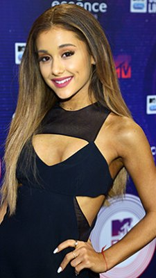

ARIANA GRANDE is Born in Boca Raton, Florida, in June 1993, Nickelodeon star turned pop idol Ariana Grande started her career onstage in the Broadway musical 13, before landing her first role as Cat Valentine on the Nickelodeon show Victorious. After the show ended in 2013, Grande was asked to do a spinoff series, Sam & Cat, which ended in 2014.
